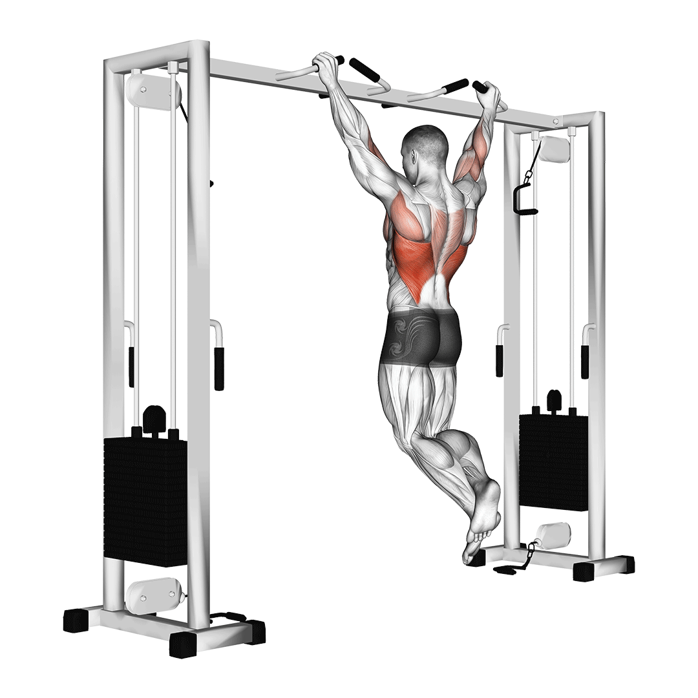
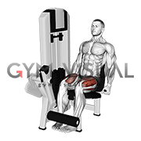

Upper Body
Bench Press

الشرح: استلقِ على البنش، امسك البار بعرض الكتفين، نزل للصدر وادفعه لأعلى.
أخطاء شائعة: رفع المؤخرة عن البنش، أو إنزال البار على الرقبة.
Pull-ups
الشرح: تمسك العقلة وتسحب جسمك لأعلى لحد ما ذقنك تعدي البار.
أخطاء شائعة: التأرجح أو استخدام الزخم أو النزول نصف تكرار.
Overhead Press

الشرح: من وضع الوقوف، ارفع البار من الكتف لأعلى في خط مستقيم.
أخطاء شائعة: انحناء أو تقوس الظهر أو خفض البار بسرعة.
Barbell Row
الشرح: انحنِ للأمام مع ظهر مستقيم واسحب البار نحو بطنك.
أخطاء شائعة: تقوس الظهر، أو استخدام الزخم بدلاً من التحكم.
Biceps Curls
الشرح: اثنِ الذراع وارفع الوزن لأعلى بدون تحريك الكتفين.
أخطاء شائعة: التأرجح أو تحريك الجسم بالكامل.
Triceps Pushdowns
الشرح: باستخدام الكابل، ادفع المقبض لأسفل مع تثبيت الكوعين بجانب الجسم.
أخطاء شائعة: رفع الكوع أو استخدام الذراع بالكامل.
Lower Body
Squats
الشرح: اقف وانزل لأسفل كأنك تجلس على كرسي، وادفع لأعلى بالكعب.
أخطاء شائعة: تقوس الظهر أو رفع الكعب عن الأرض.
Romanian Deadlift
الشرح: ادفع الورك للخلف، وانزل بالبار لأعلى الساقين وأنت تحافظ على استقامة الظهر.
أخطاء شائعة: ثني الركبتين كثيرًا أو تقوس الظهر.
Walking Lunges
الشرح: تقدم بخطوة للأمام وانزل حتى يكون كل من الركبتين بزاوية 90 درجة.
أخطاء شائعة: فقدان التوازن أو تقدم الركبة للأمام أكثر من اللازم.
Leg Curl
الشرح: اثنِ الركبة واسحب الوزن نحوك، ثم ارجع ببطء.
أخطاء شائعة: التسرع أو رفع الفخذ عن الجهاز.
Standing Calf Raises

الشرح: ارفع كعبك لأعلى واثبت، ثم انزل ببطء للأسفل.
أخطاء شائعة: أداء سريع بدون تحكم أو نصف المدى.
Upper Body (Variations)
Incline Dumbbell Press

الشرح: اضبط المقعد على زاوية مائلة، وادفع الدمبلز لأعلى بشكل مائل.
أخطاء شائعة: تقليل المدى الحركي أو عدم التوازن.
Chin-ups

الشرح: امسك البار ورافع راحة اليد نحو الوجه، واصعد حتى ذقنك تتجاوز البار.
أخطاء شائعة: الزخم الزائد أو نصف التكرار.
Dumbbell Shoulder Press

الشرح: اجلس وادفع الدمبلز لأعلى فوق الرأس.
أخطاء شائعة: عدم التوازن أو قوس زائد في الظهر.
Seated Cable Row
الشرح: اسحب المقبض نحو بطنك مع تثبيت ظهرك مستقيم.
أخطاء شائعة: تحريك الجسم أو استخدام الظهر للسحب.
Hammer Curls
الشرح: ارفع الدمبلز لأعلى باتجاه الكتف مع قبضة محايدة.
أخطاء شائعة: التسرع أو استخدام الكتف.
Skull Crushers
الشرح: من وضع الاستلقاء، انزل البار نحو الجبهة ثم ادفعه لأعلى.
أخطاء شائعة: تحريك الكوعين أو استخدام الأكتاف.
Lower Body (Day 5)
Deadlift
الشرح: ارفع البار من الأرض مع استقامة الظهر ودفع الورك للأمام.
أخطاء شائعة: تقوس الظهر أو شد بالذراعين فقط.
Front Squats
الشرح: امسك البار أمام الكتف وانزل كأنك تجلس.
أخطاء شائعة: الانحناء للأمام أو رفع الكعب.
Bulgarian Split Squats
الشرح: ضع رجل خلفك على كرسي وانزل بالرجل الأمامية ببطء.
أخطاء شائعة: فقدان التوازن أو دفع الركبة للأمام.
Leg Extension
الشرح: ارفع الوزن بأقدامك للأمام حتى تمد رجليك بالكامل.
أخطاء شائعة: الأداء السريع أو رفع الورك.
Seated Calf Raises
الشرح: اجلس وارفع كعبك لأعلى ثم انزله ببطء.
أخطاء شائعة: استخدام الوزن الثقيل بدون تحكم أو مدى غير كامل.
Workout Schedule
| اليوم | نوع التمرين | التمارين |
|---|---|---|
| 1 | Upper Body | Bench Press, Pull-ups, Overhead Press, Barbell Row, Biceps Curls, Triceps Pushdowns |
| 2 | Lower Body | Squats, Romanian Deadlift, Walking Lunges, Leg Curl, Standing Calf Raises |
| 3 | راحة | راحة أو تمارين كارديو خفيفة |
| 4 | Upper Body (Variations) | Incline Dumbbell Press, Chin-ups, Dumbbell Shoulder Press, Seated Cable Row, Hammer Curls, Skull Crushers |
| 5 | Lower Body | Deadlift, Front Squats, Bulgarian Squats, Leg Extension, Seated Calf Raises |
| 6–7 | راحة | راحة أو تمارين مرونة/كارديو خفيف |